CIFRAS Y LETRAS
- Enrutamiento y distribución: Apoyo en configuración y enrutamiento de E/S, despliegue de fibra, recepción de 4 cámaras broadcast (más cabeza caliente) y emisión de señal personalizada a todos los departamentos.
- Gestión de señales e iluminación: Diseño de programación MIDI ad hoc para recibir señal y gestionar la pulsación de los concursantes mediante conexión específica con el departamento de iluminación.
Coordinador técnico de plató para el concurso de RTVE supervisando el diseño, montaje e instalación audiovisual y el sistema de proyección de señales broadcast en directo.

ATLETICO DE MADRID
- Mixer Video Wall y Ribbon Utilizando TriCaster Flex Dual Control y Vizrt Vectar para la realización de las tres señales simultáneas de Sky-Ribbon, el anillo led del estadio y los Videowall del mismo, incluyendo la gestión de contenido y la integración de gráficos en tiempo real.
- Mixer: Mezclador de vídeo con tc2 de tricaster de eventos coorporativos en el auditorio.
- Cámara de eventos coorporativos en el auditorio Detalle
- técnico polivalente técnico polivalente (audio, video, proyección, realización) en flexis coorporativos para clientes del estadio riyah
Técnico audiovisual polibalente (montaje, enrutamiento, supervisión) de eventos coorporativos en riyah metropolitano

IBERDROLA
- Digital Summit: Montaje del proyecto, manejo de cámaras ptz canon en directo en auditorio general y jefe técnico de sala con realización híbrida Tricaster tc1, integrado con teams
- Cybertalks Realziación híbrida, integración teams, webex, zoom+ vmix en varias consolas virtuales de amazon web service para
- Asesría Audiovisual implantación de soluciones de streaming (kiloview) y sistemas de video Tricaster para los platós de Eima en madrid
Asesoramiento y diseño técnico de instalaciónes audiovisuales para diferentes proyectos híbridos de Iberdrola, entre ellos .
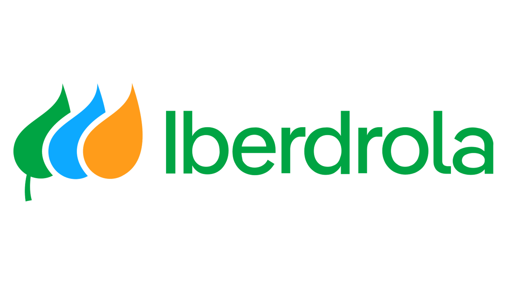
EL ECONOMISTA
- Realización y control de cámaras PTZ: Operación de 3 cámaras PTZ Datavideo, incluyendo el control de posiciones y ajuste de colorimetría, operadas mediante mezclador Blackmagic ATEM Constellation y ATEM 1 M/E Advanced Panel.
- Gestión de pantallas LED: Diseño y realización simultánea de contenidos para pantallas LED mediante mapeo visual con Millumin, integrado y controlado a través de Bitfocus Companion y el panel ATEM 1 M/E.
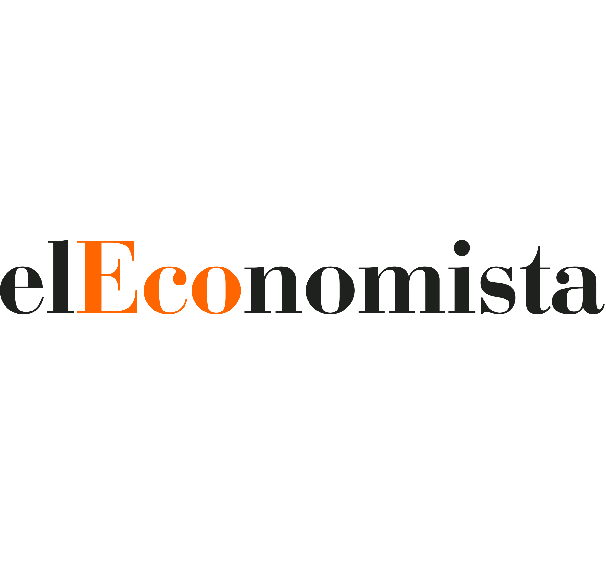
UNIVERSAL MUSIC - AITANA (LISTENING PARTY 'CUARTO AZUL')
- Responsable : Enrutamiento y disposición en escenario de 5 cámaras de estudio y 1 cámara PTZ de plano general. Captura y enrutamiento de la señal de audio del directo mediante stagebox Yamaha Rio y el enrutamiento via Dante. Envío de la señal de realización al Cubewall de proyección.
- Infraestructura de red: Diseño y despliegue de una red Wi-Fi dedicada y del software correspondiente, garantizando la recogida de señal directamente desde el dispositivo móvil de la artista.
UNIVERSAL MUSIC - LOLA INDIGO (PRESENTACIÓN DISCO DRAGÓN)
- Despliegue multicámara y radiofrecuencia: Montaje de set de grabación a 3 cámaras en la azotea del Teatro Kapital, integrando una cámara adicional vía RF para la cobertura en directo del photocall en el acceso principal.
- Realización y streaming vertical (9:16): Gestión de la realización audiovisual y codificación de la señal en formato nativo 9:16, operando mediante sistema TriCaster y distribución a través de Nimble Streamer para la emisión en el canal de TikTok de la artista.

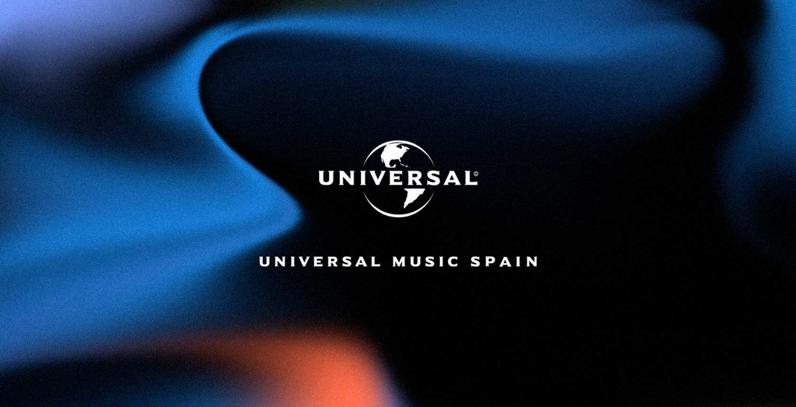
RED BULL BATALLA
Responsable Técnico de Montaje
- Despliegue de equipamiento técnico: Instalación y configuración de cámaras de estudio, sistemas PTZ, enlaces de radiofrecuencia (RF), Unidades de Control de Cámara (CCU), mesas de mezclas de vídeo y consolas de audio con stagebox.
- Infraestructura de fibra óptica y redes: Tendido y gestión de tiradas largas de cable de fibra óptica (hasta 1000 metros) para el enrutamiento de señales, junto con el diseño y despliegue de redes Wi-Fi dedicadas para la operativa de los eventos.
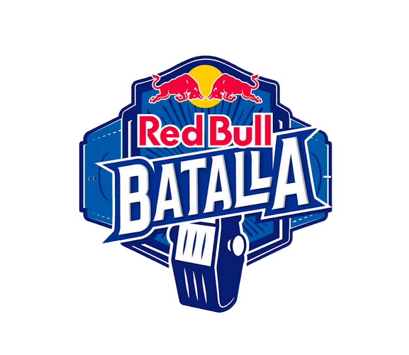
FMS WORLD SERIES 2023-2025
Responsable Técnico de Montaje
- Despliegue de equipamiento técnico: Instalación y configuración de cámaras de estudio, sistemas PTZ, enlaces de radiofrecuencia (RF), Unidades de Control de Cámara (CCU), mesas de mezclas de vídeo y consolas de audio con stagebox.
- Infraestructura de fibra óptica y redes: Tendido y gestión de tiradas largas de cable de fibra óptica (hasta 1000 metros) para el enrutamiento de señales, junto con el diseño y despliegue de redes Wi-Fi dedicadas para la operativa de los eventos.
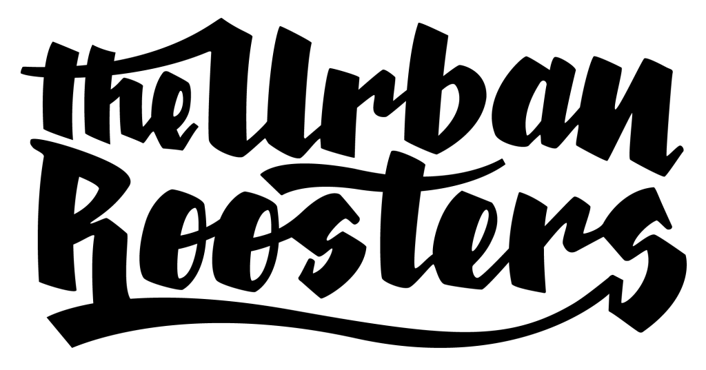
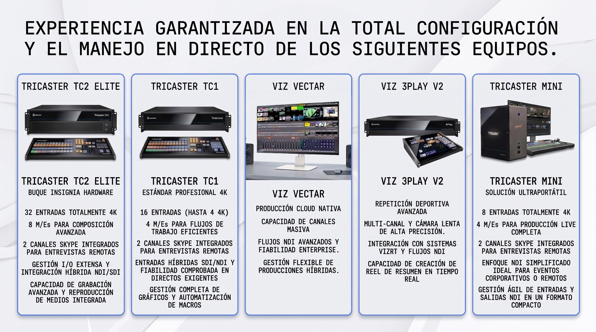
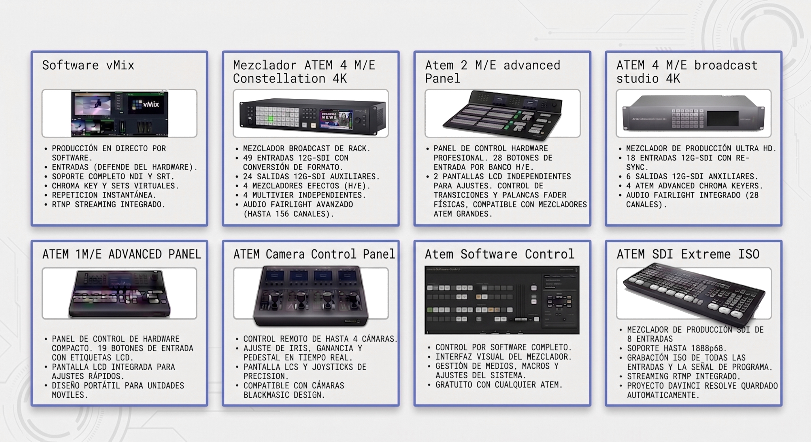
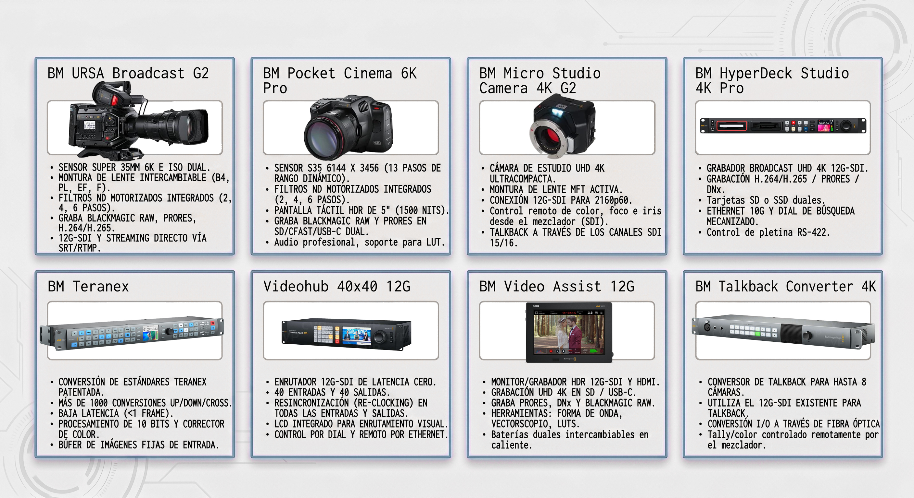
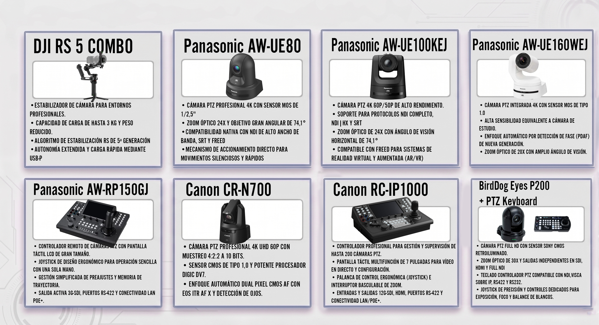
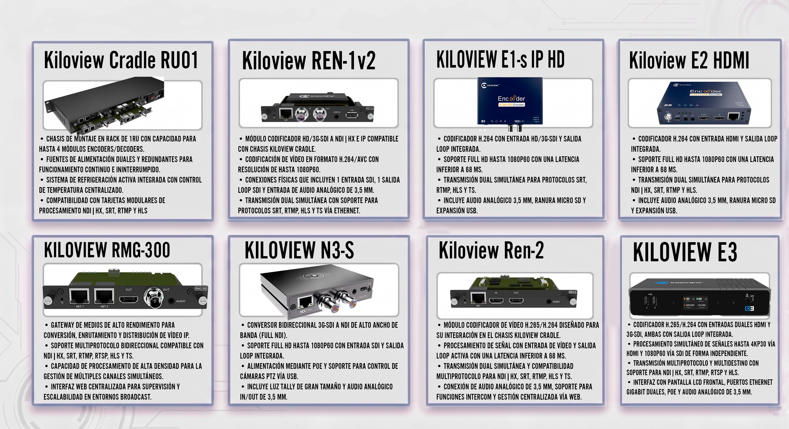
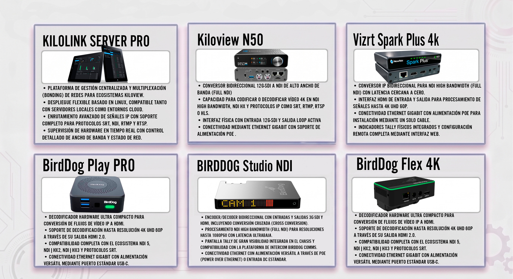